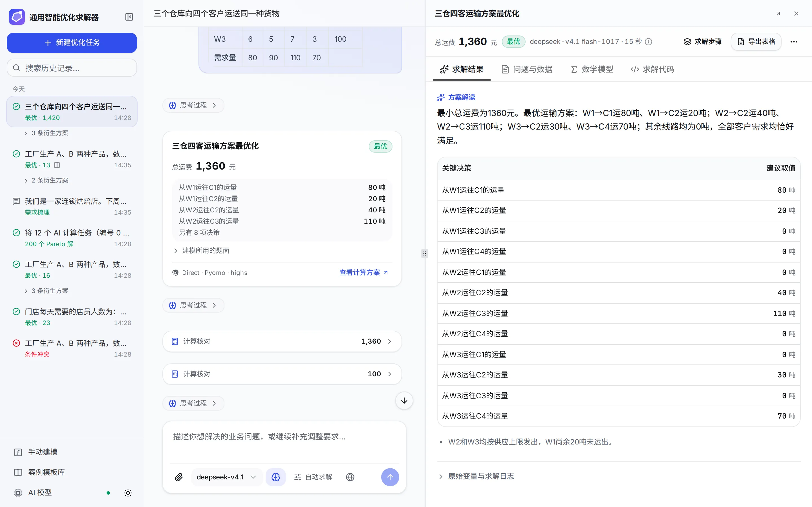
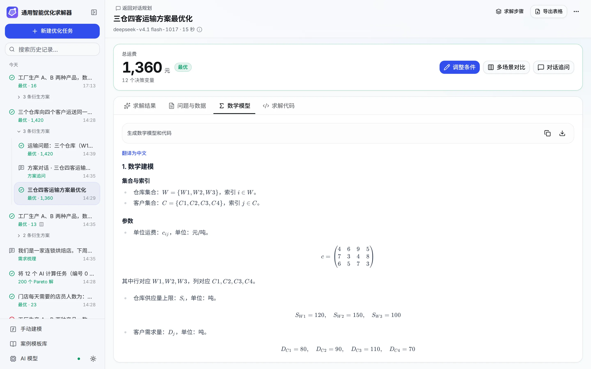
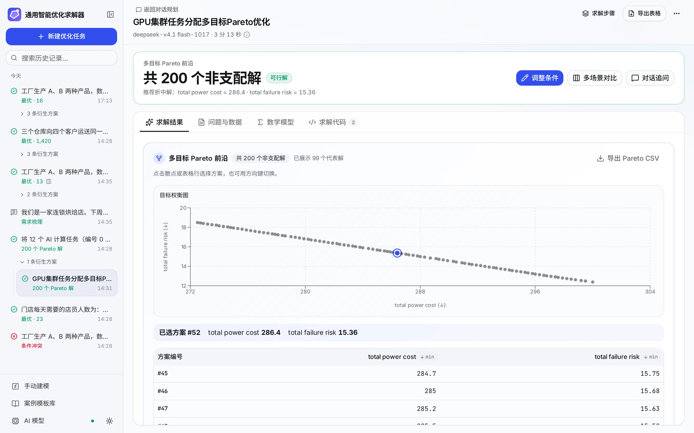

表格直接拖进对话
支持 Excel、CSV、TSV、JSON 和文本。建模前可以在表格视图里检查和编辑数据，补充列名与单位。
生产、排班、运输、选址……用日常语言写下目标、规则和数据。求解器自动建立数学模型，在隔离环境中调用真实求解器计算，再用业务语言解释结果；模型、代码和每个数值都可以核对。
非支配权衡解集
每天恰好 2 人，每人只排 1 天。
每个仓库服务 1 家门店，全部门店完成补货。
交互示例：生产、排班和配送在浏览器中直接求解小规模问题；GPU 调度展示一次 AutoCO 运行得到的部分 Pareto 前沿。这里不调用大模型。
对话求解
直接描述问题，或把表格拖进对话。信息不足时，助手只追问最关键的条件；问题明确后自动选择建模方法和求解器，算完用业务语言说明结果。

可以核对
大模型负责理解问题、写出数学模型和求解代码；计算由真实求解器在隔离容器中完成。数学模型、求解代码、求解日志和完整变量都保存在运行记录里，可以逐项核对和导出。

调整与比较
说一句“B 至少生产 3 件”就能得到新方案，原方案保留在旁边。多个假设从同一基准分别计算，并排比较目标值和决策变化；条件互相冲突时，平台根据求解器给出的冲突约束说明原因。

两类求解引擎
线性、整数、凸和约束规划问题交给精确求解器，结果附带求解器给出的状态；大规模组合、黑盒或多目标问题交给 AutoCO，由它从内置算法池中选择并配置算法，搜索可行解或 Pareto 前沿。默认自动选择，也可以手动指定。
Pyomo · OR-Tools · CVXPY · PySCIPOpt · CasADi
求解器报告最优、可行或不可行等状态。
SA · TS · ILS · LNS · GA · CMA-ES · DE · PSO · ACO · NSGA-II · MOEA/D · NSGA-III
启发式结果不保证全局最优，多目标问题返回非支配解集。

场景模板
工作台内置 8 个可以直接求解的场景模板，覆盖常见的运营决策。选一个模板，换成你自己的数据即可。
在有限设备与工序额度下，合理安排多种产品的产量，让总利润最高。
按 6 个月需求安排每月产量，在开工费、生产费和库存费之间取得最低总成本。
三个仓库向四个客户发货，按供需和单位运费求总运费最低的调拨方案。
两辆限载货车从配送中心出发服务 6 个客户，规划总行驶距离最短的路线。
从 4 个候选地址中选择要建的仓库，同时决定供货关系，使建设费与运费之和最低。
每名店员连续上班 5 天、休息 2 天，满足每天的人手需求并使雇佣人数最少。
在目标收益约束下分配 4 类资产的权重，使组合风险（方差）最小。
把 12 个 AI 训练任务分到 4 个集群，同时权衡总电费与故障风险，自动生成 Pareto 前沿。
更多功能
支持 Excel、CSV、TSV、JSON 和文本。建模前可以在表格视图里检查和编辑数据，补充列名与单位。
还没想清楚时，需求助手边聊边整理一份可编辑的需求稿，确认后再交给建模。
9 种建模方法、5 个建模库可以任选；同一问题最多 12 个方案并排比较目标值、用时和 Token。
同一问题的需求、方案和对比按来源归在一起，可以加备注和标签，导出 Markdown 报告。
同样的建模流程可以在命令行或 Python 中运行，也可以作为 Codex、Claude Code 的 Skill 使用。
界面支持中文、英文和深色模式；建模方法按运行语言生成说明。
开源部署
Apache-2.0 开源。用 Docker Compose 在个人电脑或团队服务器上启动，连接你选择的模型服务；密钥只保存在服务器上。
git clone https://github.com/Fangziyang0910/LLM4OM.git && cd LLM4OM
cp .env.example .env # 填写模型服务商、地址、模型和密钥
docker compose up -d --build
# 打开 http://localhost:8767npx skills add Fangziyang0910/LLM4OM --skill llm4om -g
# 新开会话：Claude Code 输入 /llm4om，Codex 输入 $llm4om
# 由当前 Agent 建模和解读，求解在本机 Docker 中进行常见问题
没有找到答案？查看文档中的常见问题与排查，或在 GitHub 提交 Issue。
可以。用日常语言写下目标、规则和数据即可，缺少关键信息时助手会追问。结果附带业务语言解读，也可以导出 Excel。第一次处理某类问题时，建议核对数学模型是否准确表达了你的要求。
方案数值由求解器计算，不由大模型生成；最优、可行、不可行等求解状态如实显示。大模型可能误解题意，所以平台保留数学模型、求解代码和完整变量供你核对，也可以用不同方法或模型交叉比较。
默认自动选择：线性、整数、凸和约束规划问题使用精确求解器；大规模组合、黑盒或多目标问题使用 AutoCO。AutoCO 的启发式结果不保证全局最优。也可以在对话或设置中手动指定。
题面和附件内容会按需发送给你配置的模型服务，用于理解问题和写出模型；求解代码在你自己的服务器上运行。需要数据不出内网时，可以连接内网部署的 OpenAI 兼容模型服务。
DeepSeek、OpenAI、Anthropic、Google Gemini、Kimi、GLM、阿里云百炼、OpenRouter，以及任意 OpenAI 兼容接口。优化对话需要模型支持工具调用。
平台以 Apache-2.0 协议开源，可以免费使用和部署。使用云端模型时按模型服务商计费；Gurobi、CPLEX 等商业求解器需要各自的许可证，或在其限规模模式下使用。